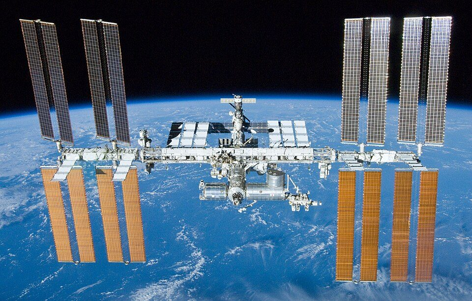

Universe · 6 articles
Curiosities and numbers
Simulators, records, distances, anecdotes, surprising discoveries and myths about the universe.
The universe is full of dizzying numbers and stories that sound made up. We have gathered them here: simulators to work out your weight on Jupiter or your age on Mars, the records of the cosmos, how distances are measured, the best anecdotes in the history of astronomy and the discoveries that have most surprised scientists.
 Universe simulatorsWork out your weight on other worlds, your age on each planet, how long it would take to reach the stars and the true scale of the solar system.
Universe simulatorsWork out your weight on other worlds, your age on each planet, how long it would take to reach the stars and the true scale of the solar system. Numbers and records of the universeThe biggest, the hottest, the fastest and the farthest: the records of the cosmos on a single page.
Numbers and records of the universeThe biggest, the hottest, the fastest and the farthest: the records of the cosmos on a single page. Distances and scales of the universeAstronomical unit, light year and parsec: how impossible distances are measured and how to picture them.
Distances and scales of the universeAstronomical unit, light year and parsec: how impossible distances are measured and how to picture them. Anecdotes from astronomy and spaceFrom the astronomer who lost his nose in a duel to the sandwich smuggled into space: the most curious stories.
Anecdotes from astronomy and spaceFrom the astronomer who lost his nose in a duel to the sandwich smuggled into space: the most curious stories. Surprising discoveriesVisitors from other stars, galaxies that came too early, waves that stretch space and a photo of a black hole: the news that astonished science.
Surprising discoveriesVisitors from other stars, galaxies that came too early, waves that stretch space and a photo of a black hole: the news that astonished science.
Space mythsCan you see the Great Wall from space? Would you explode without a suit? Is summer hotter because we are closer to the Sun? What is true and what is not.